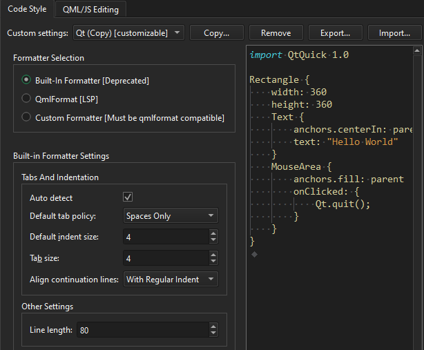
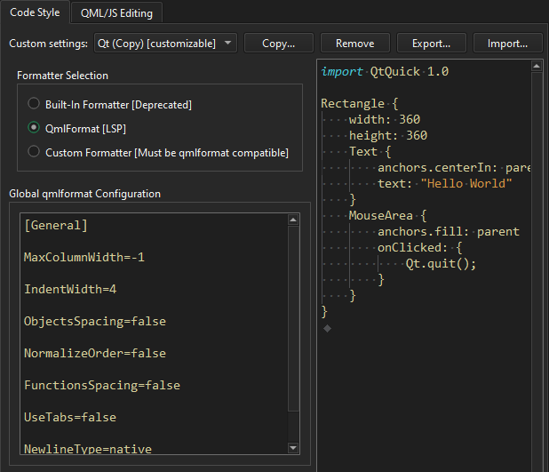
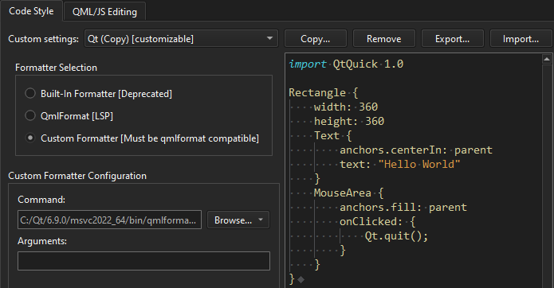

Specify Qt Quick code style
You can use the built-in code formatter (deprecated) or an external tool, such as qmlformat, to automatically format QML files according to QML coding conventions.
To specify QML code style globally:
- Go to Preferences > Qt Quick > Code Style.
- In Custom settings, select the settings to modify, and then select Copy.

- Give a name to the settings, and select OK.
- In Formatter Selection, select the formatter to use.
To override the global preferences for a particular project, select Projects > Code Style.
Use the built-in formatter
The built-in formatter has been deprecated in favor of the qmlformat tool or a custom formatter.
To set global preferences for the built-in formatter:
- In Formatter Selection, select Built-in formatter.
- Specify how to interpret the Tab key presses and how to align continuation lines, as well as set the maximum line length for code lines.
Use qmlformat
To set global preferences for the qmlformat tool:
- In Formatter Selection, select QMLFormat.

- In Global qmlformat Configuration, set the code style. This field uses the same format as a
.qmlformat.inifile and overrides the.qmlformat.inifile in the generic configuration location (QStandardPaths::GenericConfigLocation).
The qmlformat tool searches for a .qmlformat.ini file in the same directory as the file being formatted. If it is not found, it searches the parent directories up to the root directory. If no .qmlformat.ini file is found, the global preferences are used. For more information, see the qmlformat configuration settings.
Note: If a custom .qmlformat.ini file exists in the project directory or any parent directory, it takes precedence over the global configuration.
Use a custom tool
To use a custom tool that is compatible with qmlformat:
- In Formatter Selection, select Custom formatter.

- In Command, enter the path to the tool.
- In Arguments, enter options for running the tool.
- View the code style set in a
.qmlformat.inifile on the right.
See also Automatically format QML/JS files, Indent text or code, Find preferences, and Specify code style.